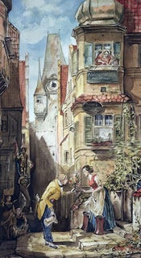
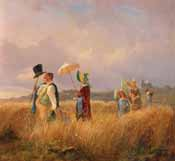
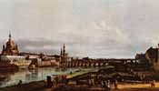
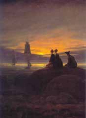
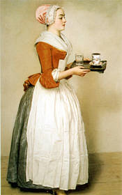
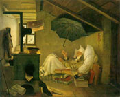

|
|
|
 "Der Gratulant"  "Der Sommerspaziergang" von Spitzweg  "Dresden" von Canaletto  CDF: "Mondaufgang am Meer"  "Das Schokoladenmädchen"
|
Die schönen Werke berauschen nicht, aber sie entzücken.
Vom Kunstverständnis und von den umfangreichen Werken einzelner Maler, die diese in den verschiedensten Epochen schufen, habe ich leider nur sehr wenige und nur sporadische Kenntnisse. Aber es stimmt auf keinen Fall, dass ich mich überhaupt nicht für Kunst interessieren würde. Diese Behauptung konnte nur aufgestellt werden, weil es darum ging, Ausstellungen von Vertretern des Impressionismus anzuschauen, für die ich mich nur manchmal und dann auch nur bedingt begeistern kann.
Dahingegen konnte ich mich schon immer für
Rubens, Rembrandt und Dürer begeistern. Ein besonderer Lieblingsmaler von
mir ist Carl Spitzweg. Seine Bilder finde ich so faszinierend und
aussagekräftig, dass ich sogar die Mühe auf mich genommen habe und seine
Motive im Kreuzstich verewigt habe. Auch die Bilder von Caspar David Friedrich haben mich sehr gefangen genommen. Zum Beispiel "Zwei Männer in Betrachtung des Mondes" und
Beim Besuch der Dresdner Gemäldegalerie im
Jahre 2002 war ich besonders von den monumentalen Bildern des
italienischen Malers Bernardo Bellotto, genannt CANALETTO angetan.  "Der arme Poet"
Der
Sinn einer schönen Schöpfung
|